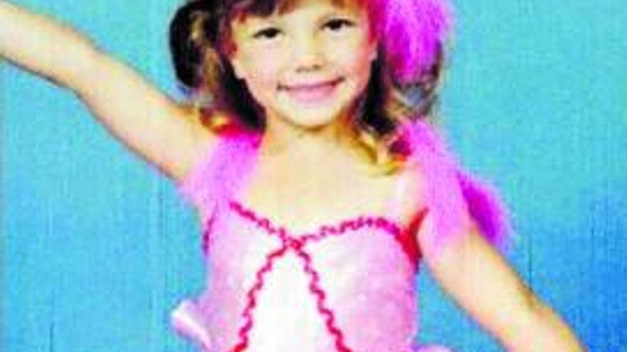
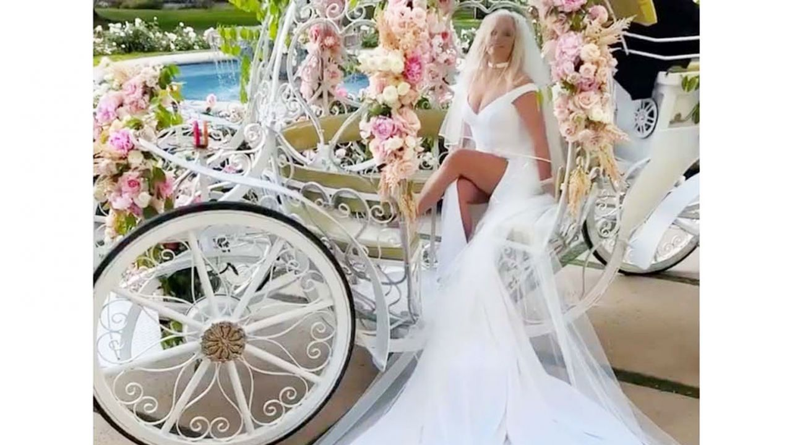

Britney Jean Spears nació el 2 de diciembre de 1981 en McComb, Misisipi, Estados Unidos, pero se crio en Kentwood, Luisiana. Es la segunda hija de Lynne Irene Spears (de soltera Bridges) y James Parnell Spears. Britney Spears es de ascendencia inglesa por parte de su abuela materna, que nació en Londres, y tiene ascendencia maltesa distante.Tiene un hermano mayor, Bryan James (n. 1977) y una hermana menor, Jamie Lynn (n. 1991).A los tres años, comenzó a asistir a clases de baile en su ciudad y fue seleccionada para realizar un solo en el recital anual. Durante su infancia, también asistió a clases de gimnasia y de canto, y ganó varios concursos a nivel estatal y en programas para niños talento.Spears hizo su debut en los escenarios locales a los cinco años, cantando "What Child Is This?" en su graduación de preescolar. Ella dijo acerca de su ambición cuando era niña, "yo estaba en mi propio mundo, [...] me enteraba de lo que debía hacer a una edad temprana"
Spears realizó una segunda audición a los once años de edad, para la sexta temporada de The All New Mickey Mouse Club (M.M.C) donde esta vez fue aceptada en diciembre de 1992. El programa se estrenó con gran éxito en el cual Spears fue una Mouseketeer presentadora de sketches de comedia y de múltiples canciones en vivo junto al elenco, donde conoció a las futuras estrellas pop Christina Aguilera y Justin Timberlake y a los futuros actores Ryan Gosling y Keri Russell. Sin embargo, el programa fue cancelado al final de la temporada siete en 1994. Spears regresó a Kentwood y se matriculó en la Academia Parklane en las cercanías de McComb, Misisipi. A pesar de que hizo amistad con la mayoría de sus compañeros de clase, comparó su escuela con "la escena de apertura de Clueless con todos los grupos sociales. [...] Estaba tan aburrida. Yo era la armadora del equipo de baloncesto. Tuve mi novio, y me fui al baile de Navidad formal. Pero quería más"
A finales de 1998, el sello discográfico Jive Records lanzó «...Baby One More Time», el sencillo debut de Britney Spears, compuesto y producido por el prestigioso letrista y productor sueco, Max Martin. Respaldado por un videoclip dirigido por Nigel Dick, en el que la cantante, de entonces 16 años de edad, fue mostrada cantando y bailando como una alumna de un colegio católico; «...Baby One More Time» se convirtió en un éxito número uno en más de 20 países, incluyendo a Estados Unidos, donde Spears se convirtió en una de las pocas artistas femeninas que logró que su sencillo debut alcanzara el número 1 del Billboard Hot 100, la principal lista musical de canciones del país. En enero de 1999 fue lanzado su álbum debut, ...Baby One More Time, que consistía de canciones dance pop y baladas, respaldadas, en su mayoría, por Eric Foster White y Max Martin.
El 21 de febrero de 2022, se informó que Spears firmó un contrato por 15 millones de dólares para el lanzamiento de un libro con sus memorias.Forbes lo llamó como "una de las mayores ofertas de libros de todos los tiempos".Dos meses después, anunció su embarazo con Asghari, el que terminó en un aborto espontáneo un mes después.La pareja se casó el 9 de junio y la ceremonia se llevó a cabo en su casa en Thousand Oaks, Los Ángeles. No se invitó a ningún miembro de la familia de Spears (incluidos su padre, madre, hermana y hermano), ni tampoco a sus dos hijos.El primer esposo de Spears, Jason Alexander, intentó colarse en la boda irrumpiendo en su casa armado con un cuchillo, pero fue arrestado.Britney obtuvo una orden de restricción de tres años contra él.Spears y Asghari pronto se mudaron de su casa en Thousand Oaks a una nueva mansión de $11.8 millones en Calabasas que ella había comprado. El 25 de julio, se informó que Spears y el músico inglés Elton John habían grabado una nueva versión del sencillo de 1972 «Tiny Dancer».«Hold Me Closer» se anunció el 19 de agosto con la portada oficial retratando a Spears y John cuando eran niños;fue lanzado el 26 de agosto.El sencillo marca el primer lanzamiento musical de Spears en seis años desde su noveno álbum de estudio, Glory (2016), así como desde la finalización de su tutela.
